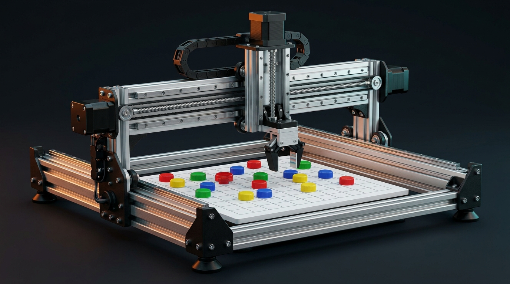
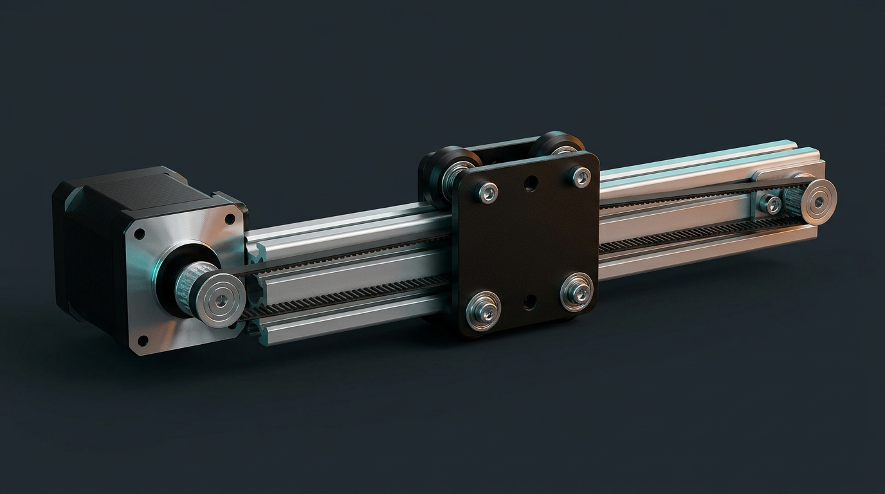
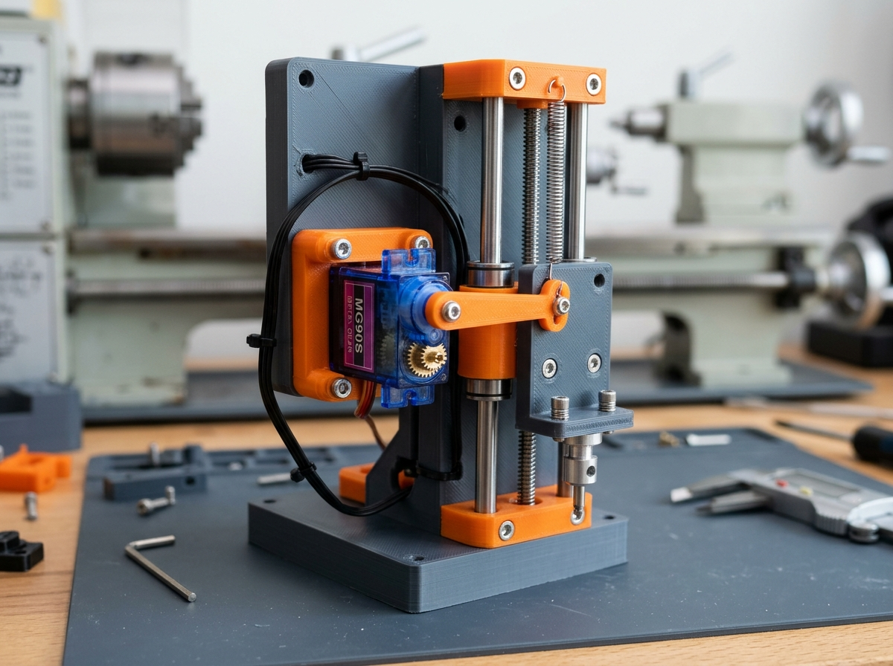
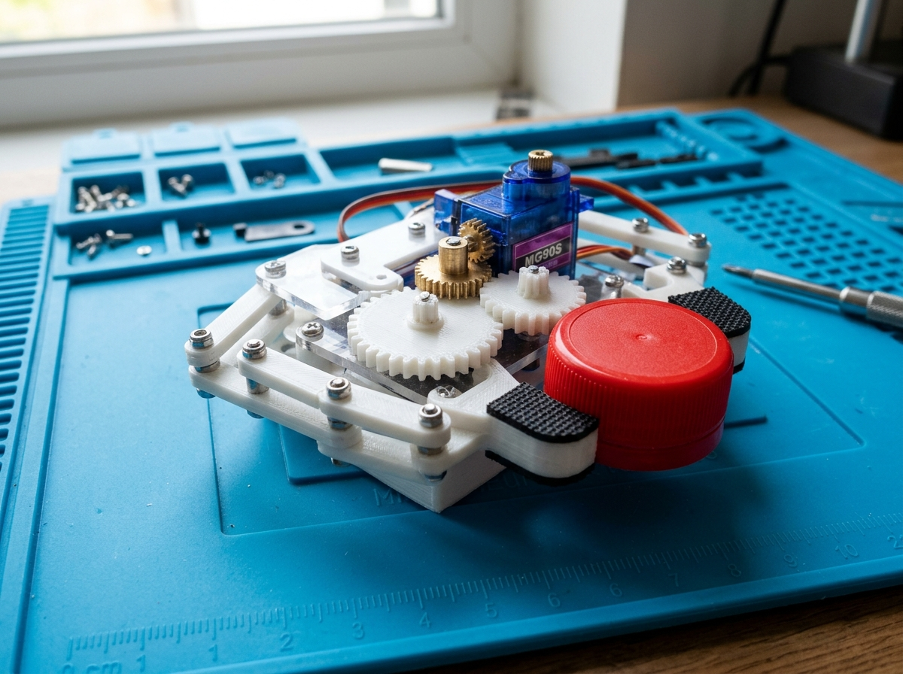
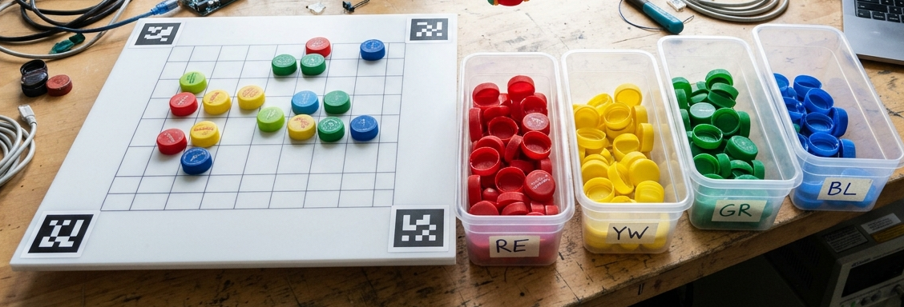
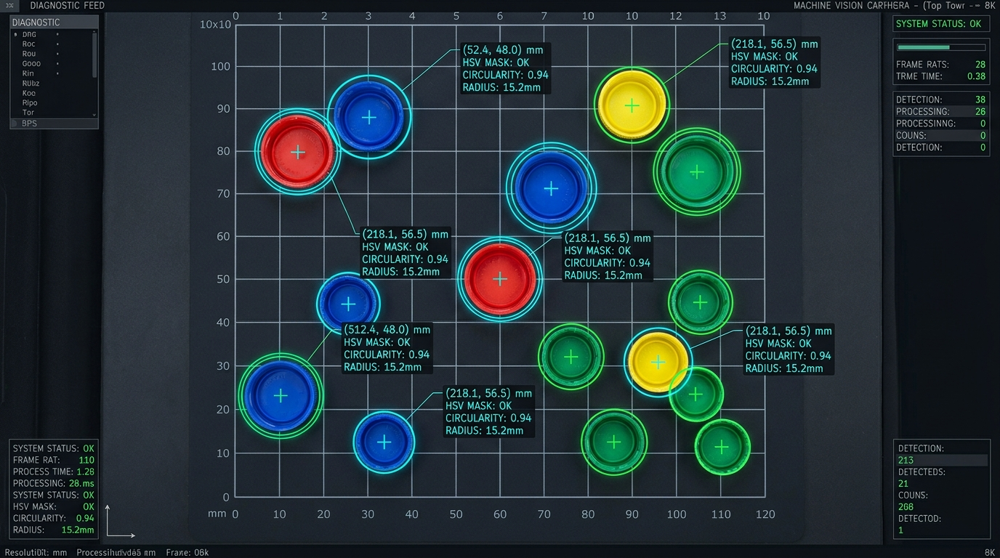

A vision-guided Cartesian pick-and-place robot featuring a dual-controller architecture: Teensy 4.1 edge computer vision, Arduino Mega 2560 real-time motion control, and ESP32-CAM acquisition. Operates 100% offline with fail-safe recovery.

The machine solves the classic automated bin-picking challenge with low-cost components, guaranteed offline uptime, and localized recovery.
Compact self-contained tabletop footprint constructed with 2020 aluminum extrusions and rigid 3D printed brackets.
Engineered to handle common plastic beverage bottle caps with outer diameter between Ø28 mm and Ø32 mm.
10 × 10 sorting grid (30 mm pitch) with matte neutral background and corner calibration markers.
Embedded computer vision detects RGB/HSV color masks, calculates centroids, and maps pixels to millimeters.
Two NEMA 17 stepper motors on GT2 belts move the gantry; two MG90S metal-gear servos control vertical stroke and jaws.
Four color-coded bins (Red, Yellow, Green, Blue) positioned outside the active grid area for unobstructed sorting.
Requires no laptop, Wi-Fi, internet connection, or external PC. All image processing executes locally on Teensy 4.1.
If UART communication drops mid-pick, the Mega autonomously finishes depositing the held cap, retracts Z, and parks safely.
Click the 300×300 mm grid to add/remove caps, trigger autonomous sorting, and test communication break recovery in real-time.
By segregating image processing from real-time motor step generation, the system keeps stepper pulse timing free of vision stalls while relying on a hardwired actuator E-stop for primary safety cutoff.
| Controller / IC | Processor Specs | Primary Responsibility | Interface Bus | Operating Voltage |
|---|---|---|---|---|
| ESP32-CAM | Xtensa LX6 @ 240 MHz + OV2640 | Image acquisition of the 300×300 mm board (QVGA 320×240 RGB565 / JPEG). Captures on command. | UART2 / SPI | 3.3V Logic |
| Teensy 4.1 | ARM Cortex-M7 @ 600 MHz (1 MB RAM) | Embedded image processing, HSV colour segmentation, contour detection, planar homography, and sorting plan generation. | UART1 & Serial2 | 3.3V Logic |
| Arduino Mega 2560 | ATmega2560 @ 16 MHz | Deterministic motion control, step pulse generation, homing routines, polled X/Y/Z NC limit & E-stop sensing, servo sequencing, and safety watchdog. | UART1 & I2C | 5V Logic |
| PCA9685 | 16-Channel 12-Bit PWM (I2C) | Generates jitter-free 50 Hz PWM timing for the two MG90S servos (Z-axis linkage & gripper jaws). | I2C (SDA/SCL) | 5V Logic / 5V V+ |
| TMC2208 × 2 | Trinamic SilentStepStick Driver | Drives the X and Y NEMA 17 stepper motors with StealthChop2 silence at 1/8 microstepping (40 steps/mm + 1/256 internal MicroPlyer interpolation). | STEP / DIR / EN | 12V VMOT / 5V VIO |
Captures QVGA 320×240 RGB565 frames of the sorting workspace
Image decoding → Colour segmentation → Cap centre detection → Planar homography → Sorting plan
Coordinates → STEP/DIR Pulses → Servo PWM → Pickup → Bin Placement → Fault Recovery
A rigid, moving-bridge Cartesian gantry with guided vertical slider and parallel dual-finger gripper.






The workspace consists of a 300 × 300 mm matte white baseplate. White surface material eliminates specular reflection and maximizes color contrast against standard bottle caps. Four collection bins (Red, Yellow, Green, Blue) sit adjacent to the board along the positive X rail, allowing the gantry to deposit items without traversing back through active board space.
Leverages existing hardware you already own while detailing all necessary hardware to purchase.
| # | Component Name | Specification / Details | Qty | Function in System | Procurement Status |
|---|---|---|---|---|---|
| 01 | Teensy 4.1 | ARM Cortex-M7 @ 600 MHz, 1 MB RAM | 1 | Vision decoding, colour segmentation, coordinates | Already Owned |
| 02 | Arduino Mega 2560 | ATmega2560 @ 16 MHz, 54 I/O | 1 | Motion sequencing, homing, servo control, safety | Already Owned |
| 03 | ESP32-CAM | AI-Thinker module with OV2640 | 1 | Top-down QVGA image acquisition of sorting board | Already Owned |
| 04 | PCA9685 Board | 16-Channel 12-bit PWM generator (I2C) | 1 | Jitter-free servo signal generation | Already Owned |
| 05 | MG90S Servo | Metal-gear micro servo (1.8–2.2 kg-cm) | 2 | Z-axis vertical stroke & Gripper clamp | Already Owned |
| 06 | 12V 10A SMPS | 120W switched-mode power supply | 1 | Master DC system power source | Already Owned |
| 07 | LED Light Plate | Uniform diffused illumination panel | 1 | Eliminates shadow/glare on plastic caps | Already Owned |
| 08 | NEMA 17 Stepper Motors | 40 mm body, 1.3 A, ~4.2 kg-cm torque | 2 | X and Y Cartesian gantry travel | To Purchase |
| 09 | TMC2208 V1.2 Drivers | SilentStepStick with aluminum heatsink | 2 | Smooth, quiet stepper motor driving | To Purchase |
| 10 | GT2 Belt & 20T Pulleys | 6 mm width, 2 mm pitch, 5 mm bore pulleys | 2 sets | Precision linear belt drive transmission | To Purchase |
| 11 | 2020 Aluminum Extrusion | V-slot / T-slot profiles cut to size | 1 set | Rigid 500×500×500 mm frame structure | To Purchase |
| 12 | Linear Rails or V-Wheels | Delrin V-wheel kits or MGN12H rails | 2 axis sets | Low-friction linear guidance for X & Y | To Purchase |
| 13 | 5V 5A Buck Converter | High-efficiency step-down (12V ⟶ 5V; verify exact IC & servo voltage rating) | 1 | Separate regulated high-current branch for servos (common star GND) | To Purchase |
| 14 | 5V 3A Logic Buck | Regulated step-down for microcontrollers (verify exact SKU) | 1 | Separate regulated 5V branch for Mega 5V pin, Teensy VIN, ESP32-CAM | To Purchase |
| 15 | Logic Level Shifter | 4-channel bidirectional (5V ⇄ 3.3V) | 1 | Shifts BOTH TX1 & RX1 (Teensy 4.1 has no 5V-tolerant pins) | To Purchase |
| 16 | NC Limit Switches & Dual-Pole E-Stop | Roller-lever NC microswitches + dual-pole latching NC E-Stop (rated ≥10A DC) | 3 switches + 1 | X/Y/Z NC limits, hardwired 12V actuator cutoff & Pin 25 sense | To Purchase |
De-risk highest uncertainty modules first before committing to full mechanical assembly.



Detailed computer vision algorithms, electrical schematics, searchable pinout matrices, fail-safe state machines, production source code, and hardware guidelines are hidden by default to keep the main page streamlined. Click any module below or use the Engineering tab in the top bar to inspect them on demand.
Running on the Teensy 4.1's 600 MHz ARM Cortex-M7 with 1 MB RAM. Zero external cloud servers.
QVGA Resolution: 320 × 240 pixels.
Colour Depth: RGB565 (2 bytes / pixel).
Formula: 320 × 240 × 2 = 150 KiB.
Raw frame consumes only 14.6% of internal SRAM.
Remaining >800 KiB handles HSV mask buffers, connected-component labeling, and sorting queues without heap fragmentation.
Effective transfer time: ~1.67 seconds per raw frame.
Framed with custom packet header, length word, and CRC16 checksum for transmission integrity.
Explore each stage of the vision pipeline executing on the Teensy 4.1 Cortex-M7.
The ESP32-CAM captures a top-down frame under fixed LED illumination. The raw RGB565 stream is piped over high-speed UART directly into Teensy's pre-allocated DMA ring buffer. A CRC16 check validates frame integrity before parsing begins.
Strict rail isolation guarantees servo inductive spikes never reset sensitive 3.3V logic or microcontrollers.
Direct 12V supply routed to both TMC2208 VMOT power inputs, equipped with 100 µF low-ESR decoupling capacitors.
Dedicated high-current buck converter feeds PCA9685 V+ power terminal. Absorbs sudden 1.5A stall current spikes from gripper jaws.
Separate regulated 5V logic branch (common star ground — not galvanically isolated) powering Arduino Mega 5V pin, Teensy 4.1 VIN, ESP32-CAM 5V, and PCA9685 VCC. Combined 5V/5A + 5V/3A rails = 40W rated (~45–47W from 12V at ~85–90% buck efficiency); size wire gauges, fuses & connectors to exact SKUs.
| Subsystem | Source Pin | Destination Pin | Signal Description | Voltage Level | Safety Notes |
|---|---|---|---|---|---|
| 5V 3A Logic Buck ⟶ Logic Rail | Buck 5V+ & GND | ESP32 5V, Teensy VIN, Mega 5V, PCA VCC | Clean Regulated 5.0V Logic Supply (Branch C) | 5.0V Regulated | Common Star Ground (GND) required across all boards |
| ESP32-CAM ⟶ Teensy | GPIO13 (TX2) | Teensy Pin 7 (RX2) | High-Speed Framed RGB565 Image Stream (921,600 Baud) | 3.3V Direct | Disable SD card; remove GPIO0-GND jumper after flashing |
| Teensy ⟶ ESP32-CAM | Teensy Pin 8 (TX2) | GPIO14 (RX2) | Frame Capture Trigger Command (0xAA) | 3.3V Direct | Triggered only when gantry is parked at (0,0) |
| Level Shifter Reference | Teensy 3.3V & Mega 5V | Shifter LV (3.3V), HV (5V) & GND | Dual Reference Rails for 4-Channel BSS138 Shifter | 3.3V / 5.0V Ref | Both LV-GND and HV-GND must tie to Star GND |
| Teensy ⟶ Mega | Teensy Pin 1 (TX1) | Shifter LV1 ⟶ HV1 ⟶ Mega Pin 19 (RX1) | Sorting Plan Batch Packets & 250ms Heartbeat (0xF0) | 3.3V ⟶ Shifter ⟶ 5V | 115,200 Baud • CRC16-CCITT verified |
| Mega ⟶ Teensy | Mega Pin 18 (TX1) | Shifter HV2 ⟶ LV2 ⟶ Teensy Pin 0 (RX1) | Batch ACK (0xA1), Batch Complete (0xA3) & Halt (0xEE) | 5V ⟶ Level Shifter ⟶ 3.3V | MANDATORY Level Shifter! Teensy pins are NOT 5V tolerant |
| Mega ⟶ TMC2208 (X) | Mega Pin 2 | X Driver STEP Pin | X-Axis Step Pulse Train (40 steps/mm, 370mm range) | 5V VIO | 2800 steps/s max speed (70 mm/s nominal on 16 MHz AVR; measure actual travel) |
| Mega ⟶ TMC2208 (X) | Mega Pin 5 | X Driver DIR Pin | X-Axis Direction Toggle | 5V VIO | CW / CCW rotation |
| Mega ⟶ TMC2208 (Y) | Mega Pin 3 | Y Driver STEP Pin | Y-Axis Step Pulse Train (40 steps/mm, 300mm range) | 5V VIO | Moving bridge actuator (2800 steps/s = 70 mm/s nominal) |
| Mega ⟶ TMC2208 (Y) | Mega Pin 6 | Y Driver DIR Pin | Y-Axis Direction Toggle | 5V VIO | CW / CCW rotation |
| Mega ⟶ Both TMC2208 | Mega Pin 8 | Shared Driver EN Pin | Shared Driver Enable (Active LOW) | 5V Logic | Driven LOW to energize; driven HIGH on limit-fault stop |
| TMC2208 Config & Power | MS1, MS2, VMOT, VIO | MS1=GND, MS2=GND | VMOT=12V | 1A/1B/2A/2B | 1/8 Microstep (256 MicroPlyer) & 12V Motor Coils | 12V VM / 5V VIO | 1/8 mode = 40 steps/mm (0.025mm/step) within 16 MHz AVR budget; 100µF cap on VMOT |
| Mega ⟶ PCA9685 | Pins 20 (SDA), 21 (SCL), 9 (OE) | PCA9685 SDA, SCL & OE (I2C 0x40) | I2C Bus (400 kHz) + Active-LOW Output Enable | 5V Logic / 5V V+ | Pin 9 holds OE HIGH during boot to prevent power-on servo twitch |
| PCA9685 Channel 0 | CH0 PWM | MG90S Servo #1 (Z-Axis) | Z-Axis Vertical Stroke (Lift / Lower) | 50 Hz PWM (5V V+) | Ticks: 180 (0mm Raised), 410 (40mm Pick), 320 (25mm Bin) |
| PCA9685 Channel 1 | CH1 PWM | MG90S Servo #2 (Gripper) | Gripper Jaw Clamp / Release | 50 Hz PWM (5V V+) | Ticks: 210 (36mm Open) ⟶ 385 (26mm Clamped) |
| Limit Switches ⟶ Mega | NC Contacts (Common to GND) | Mega Pins 22 (X), 23 (Y), 24 (Z) | X-Home, Y-Home, Z-Limit Endstop Inputs (Polled in loop) | 5V INPUT_PULLUP | NC to GND: LOW normal, HIGH triggered/wire break (Port A has no AVR ISR) |
| E-Stop Aux Pole ⟶ Mega | Latching E-Stop Pole 2 (NC to GND) | Mega Pin 25 (PIN_ESTOP) | Hardwired E-Stop State Sense (Pole 1 cuts 12V actuator power) | 5V INPUT_PULLUP | Latches STATE_HARD_FAULT & disables STEPPER_EN/SERVO_OE until explicit re-arm |
How the system ensures mechanical safety, homing repeatability, and graceful recovery when UART packets are severed.
| Step # | Phase Name | X / Y Gantry Motion | Z-Axis Servo | Gripper Servo | Safety Condition |
|---|---|---|---|---|---|
| 01 | Traverse to Target | Move to cap (X, Y) coordinates | Raised (0mm) | Open (36mm) | Clearance over other caps maintained |
| 02 | Lower Over Cap | Stationary at target | Lower (~40mm) | Open (36mm) | Verify slider reached bottom stop |
| 03 | Grip Cap | Stationary | Lowered | Close (~26mm) | Check servo current/torque limit |
| 04 | Vertical Lift | Stationary | Raise (0mm) | Closed (Clamped) | Spring counterbalances gripper weight |
| 05 | Travel to Bin & Scan Trigger | Rapid traverse to bin (X=355 mm); 120 ms stationary settle emits CMD_SCAN_WINDOW_OPEN |
Raised (0mm) | Closed | Vibration-free bin-side capture overlaps Steps 06–08 |
| 06 | Lower into Bin | Stationary over bin (Teensy streams & analyses fresh frame in parallel) | Lower (~25mm) | Closed | Prevents cap bounce; heartbeats stay active every 250 ms |
| 07 | Release Cap | Stationary | Lowered | Open (36mm) | Cap drops into designated bin |
| 08 | Retract & Closed-Loop Handover | Stays at bin (CMD_AWAIT_NEXT) ⟶ Next fresh cap, or Clear-FOV park at (0,0) |
Raise (0mm) | Open (Ready) | Unobstructed verify scan confirms empty before STATE_IDLE |
On UART heartbeat loss (>1.2 s), if a scanned cap is already mid-cycle, the Mega finishes placing only that one active cap into its assigned color bin (skipping any further scans/caps), returns cleanly to (0, 0) (STATE_FAILSAFE_PARKING), disables steppers, and latches STATE_FAILSAFE_HALT until explicit operator re-arm (CMD_REARM_HOME) & re-homing.
Three normally closed (NC) mechanical limit switches monitor X, Y, and Z (Pins 22–24, polled in loop() with 3-sample debounce — Port A has no AVR ISR). Open-circuit or overtravel trips latch STATE_HARD_FAULT and disable STEPPER_EN and SERVO_OE. Measure actual stopping distance on the machine.
Pole 1 of a latching red mushroom E-Stop directly cuts 12V actuator power feeding TMC2208 VMOT and the Branch B 5V servo buck input independently of firmware, while Branch C keeps logic powered. Pole 2 signals Mega Pin 25 so reset never causes unexpected motion; use a mechanical Z counterbalance/stop for torque loss on power cut.
Modular C++ source code templates for Teensy 4.1 vision, Arduino Mega motion sequencing, and packet protocol.
// =========================================================================
// Teensy 4.1 - Embedded Vision & Closed-Loop Bin-Side Planner (V1)
// Status: Pre-Validation Engineering Firmware (requires bench calibration)
// Hardware: ARM Cortex-M7 @ 600 MHz | RAM: 1024 KB | 3.3V ONLY (NOT 5V tolerant)
// Wiring:
// Serial2 (Pin 7 RX2, Pin 8 TX2) <-> ESP32-CAM UART2 (921,600 baud, 3.3V)
// Serial1 (Pin 0 RX1, Pin 1 TX1) <-> Bidirectional 3.3V/5V Shifter <-> Mega Serial1 (115,200)
// =========================================================================
#include <Arduino.h>
#include <math.h>
#include <string.h>
#include "packet_protocol.h"
#define FRAME_WIDTH 320
#define FRAME_HEIGHT 240
#define FRAME_PIXELS (FRAME_WIDTH * FRAME_HEIGHT)
#define FRAME_BYTES (FRAME_PIXELS * 2) // 153,600 bytes RGB565
#define BFS_QUEUE_SIZE 4096
#define SPLIT_ROI_MAX 160 // Max ROI dim for merged same-color split (25.6 KB DMAMEM)
// Continuous 300x300 mm Open Flat Plywood Workspace & X-Axis Gripper Geometry
#define CAP_RADIUS_MM 15.0f // Nominal cap radius (28-32 mm diameter)
#define MIN_CAP_SEP_MM 22.0f // Spatial NMS radius (distinguishes touching 28 mm caps)
#define GRIPPER_JAW_AXIS_X 1 // 1 = jaws open along X-axis, 0 = Y-axis
#define JAW_INNER_HALF_MM 18.0f // Open jaw inner gap = 36 mm (+/-18 mm)
#define JAW_OUTER_HALF_MM 26.0f // Outer jaw finger reach (+/-26 mm along jaw axis)
#define JAW_WIDTH_HALF_MM 10.0f // Jaw pad half-width perpendicular to jaw axis
#define JAW_CLEARANCE_PAD_MM 1.5f // Extra collision clearance margin around neighbor caps
// Overhead Camera Bridge Occlusion, Parallax & Retry Quarantine Guard
#define BRIDGE_OCCLUSION_HALF_MM 35.0f // Masked horizontal Y band around BIN_Y (0 disables)
#define CAMERA_HEIGHT_MM 0.0f // Set measured overhead lens height in mm (0 disables parallax)
#define CAP_HEIGHT_MM 13.0f // Nominal cap top height above board plane (mm)
#define MISSED_PICK_RADIUS_MM 14.0f // Same-color cap still within 14 mm => missed attempt
#define MAX_PICK_RETRIES 3 // Quarantine stuck/unpickable spot after 3 failed attempts
#define MAX_RETRY_RECORDS 16
#define MAX_SESSION_CYCLES 200
// Supervision & Handshake Timeouts
#define READY_POLL_INTERVAL_MS 500UL
#define HEARTBEAT_INTERVAL_MS 250UL
#define MAX_SINGLE_CAP_MS 25000UL // Per-cap stall watchdog (reset on progress/await)
#define PER_CAP_BUDGET_MS 18000UL // Worst-case cap cycle + margin for legacy batch mode
#define BATCH_OVERHEAD_MS 30000UL // Homing/parking & handshake margin
// FAIL-CLOSED CALIBRATION GUARD:
// Measure the 4 board corner fiducials (Top-Left, Top-Right, Bottom-Right, Bottom-Left)
// in pixels at the installed camera height, update BOARD_FIDUCIALS_PX below, verify mapped
// test-grid accuracy across board edges, and ONLY THEN set V1_CALIBRATION_VERIFIED to 1.
#define V1_CALIBRATION_VERIFIED 0
const float BOARD_FIDUCIALS_MM[4][2] = {
{ 0.0f, 0.0f }, // Top-Left (Origin)
{ 300.0f, 0.0f }, // Top-Right
{ 300.0f, 300.0f }, // Bottom-Right
{ 0.0f, 300.0f } // Bottom-Left
};
// Placeholder fiducial pixel coordinates — MUST be replaced with bench measurements
const float BOARD_FIDUCIALS_PX[4][2] = {
{ 16.0f, 16.0f }, // Top-Left fiducial (u, v)
{ 304.0f, 16.0f }, // Top-Right fiducial (u, v)
{ 304.0f, 224.0f }, // Bottom-Right fiducial (u, v)
{ 16.0f, 224.0f } // Bottom-Left fiducial (u, v)
};
// Allocate large buffers in Teensy 4.1 DMAMEM (512 KB RAM2)
DMAMEM uint8_t serial2RxBuf[16384]; // 16 KB DMA RX buffer prevents 921,600 baud drops
DMAMEM uint8_t imageBuffer[FRAME_BYTES];
DMAMEM uint8_t rawMask[FRAME_PIXELS];
DMAMEM uint8_t colorMask[FRAME_PIXELS];
DMAMEM uint32_t bfsQueue[BFS_QUEUE_SIZE];
DMAMEM uint8_t splitDistMap[SPLIT_ROI_MAX * SPLIT_ROI_MAX];
struct RetryZone {
float x_mm;
float y_mm;
uint8_t color;
uint8_t attempts;
bool quarantined;
};
struct MegaLinkFlags {
bool active;
bool gotProgress;
bool gotAwaitNext;
bool gotFault;
uint32_t lastPingMs;
};
CapTarget detectedCaps[MAX_BATCH_CAPS];
uint32_t detectedAreas[MAX_BATCH_CAPS];
bool detectedSafe[MAX_BATCH_CAPS];
uint8_t capCount = 0;
uint16_t currentBatchId = 1;
float H[9] = {0};
bool homographyOk = false;
bool megaFaulted = false;
RetryZone retryZones[MAX_RETRY_RECORDS];
uint8_t retryZoneCount = 0;
// External Sorting Bin Coordinates (mm)
const float BIN_X_MM[5] = { 0.0f, 355.0f, 355.0f, 355.0f, 355.0f };
const float BIN_Y_MM[5] = { 0.0f, 55.0f, 130.0f, 205.0f, 280.0f };
enum BatchExecResult : uint8_t {
EXEC_COMPLETE,
EXEC_FAULT_HALT,
EXEC_TIMEOUT
};
// Solve 3x3 planar homography H (h8 = 1) from 4 fiducial point pairs using
// 8x8 Gaussian elimination with partial pivoting (returns false if singular).
bool computeHomography4Pt(const float srcPx[4][2], const float dstMm[4][2], float outH[9]) {
double A[8][9];
for (int i = 0; i < 4; i++) {
double u = srcPx[i][0], v = srcPx[i][1];
double x = dstMm[i][0], y = dstMm[i][1];
A[2 * i][0] = u; A[2 * i][1] = v; A[2 * i][2] = 1.0;
A[2 * i][3] = 0; A[2 * i][4] = 0; A[2 * i][5] = 0;
A[2 * i][6] = -u * x; A[2 * i][7] = -v * x; A[2 * i][8] = x;
A[2 * i + 1][0] = 0; A[2 * i + 1][1] = 0; A[2 * i + 1][2] = 0;
A[2 * i + 1][3] = u; A[2 * i + 1][4] = v; A[2 * i + 1][5] = 1.0;
A[2 * i + 1][6] = -u * y; A[2 * i + 1][7] = -v * y; A[2 * i + 1][8] = y;
}
for (int col = 0; col < 8; col++) {
int pivot = col;
double maxVal = fabs(A[col][col]);
for (int row = col + 1; row < 8; row++) {
double v = fabs(A[row][col]);
if (v > maxVal) {
maxVal = v;
pivot = row;
}
}
if (maxVal < 1e-10) return false;
if (pivot != col) {
for (int c = col; c < 9; c++) {
double tmp = A[col][c];
A[col][c] = A[pivot][c];
A[pivot][c] = tmp;
}
}
double div = A[col][col];
for (int c = col; c < 9; c++) A[col][c] /= div;
for (int row = 0; row < 8; row++) {
if (row == col) continue;
double factor = A[row][col];
for (int c = col; c < 9; c++) A[row][c] -= factor * A[col][c];
}
}
for (int i = 0; i < 8; i++) {
if (!isfinite(A[i][8])) return false;
outH[i] = (float)A[i][8];
}
outH[8] = 1.0f;
return true;
}
void serviceMegaLinkDuringStream(MegaLinkFlags *flags) {
if (!flags || !flags->active) return;
uint32_t now = millis();
if (now - flags->lastPingMs >= HEARTBEAT_INTERVAL_MS) {
Serial1.write(CMD_HEARTBEAT_PING);
flags->lastPingMs = now;
}
while (Serial1.available() > 0) {
uint8_t resp = (uint8_t)Serial1.read();
if (resp == CMD_CAP_PROGRESS) {
flags->gotProgress = true;
} else if (resp == CMD_AWAIT_NEXT) {
flags->gotAwaitNext = true;
} else if (resp == CMD_RECOVERY_HALT || resp == CMD_HARD_FAULT || resp == CMD_STATUS_FAULT) {
flags->gotFault = true;
megaFaulted = true;
}
}
}
bool readBytesWithTimeout(
HardwareSerial &port,
uint8_t *dest,
uint32_t len,
uint32_t timeoutMs,
MegaLinkFlags *linkFlags = nullptr
) {
uint32_t startMs = millis();
uint32_t idx = 0;
while (idx < len) {
serviceMegaLinkDuringStream(linkFlags);
if (linkFlags && linkFlags->gotFault) return false;
if (port.available() > 0) {
dest[idx++] = (uint8_t)port.read();
} else if (millis() - startMs > timeoutMs) {
return false;
}
}
return true;
}
bool waitForMegaReady(uint32_t timeoutMs) {
uint32_t startMs = millis();
uint32_t lastPollMs = 0;
while (timeoutMs == 0 || (millis() - startMs < timeoutMs)) {
if (lastPollMs == 0 || (millis() - lastPollMs >= READY_POLL_INTERVAL_MS)) {
while (Serial1.available() > 0) Serial1.read();
Serial1.write(CMD_QUERY_STATUS);
Serial1.flush();
lastPollMs = millis();
}
while (Serial1.available() > 0) {
uint8_t resp = (uint8_t)Serial1.read();
if (resp == CMD_STATUS_READY) {
megaFaulted = false;
return true;
}
if (resp == CMD_STATUS_FAULT || resp == CMD_HARD_FAULT || resp == CMD_RECOVERY_HALT) {
megaFaulted = true;
Serial.println(F("[TEENSY] Mega reports FAULT/HALT; motion inhibited until operator re-arm."));
return false;
}
}
delay(10);
}
return false;
}
bool receiveFrameWithHeartbeat(uint8_t *buf, uint32_t expectedBytes, MegaLinkFlags *linkFlags) {
uint32_t startMs = millis();
uint8_t prev = 0;
bool synced = false;
while (millis() - startMs < 2500) {
serviceMegaLinkDuringStream(linkFlags);
if (linkFlags && linkFlags->gotFault) return false;
if (Serial2.available() > 0) {
uint8_t b = (uint8_t)Serial2.read();
if (prev == FRAME_SYNC_BYTE_1 && b == FRAME_SYNC_BYTE_2) {
synced = true;
break;
}
prev = b;
}
}
if (!synced) return false;
uint8_t lenBytes[4];
if (!readBytesWithTimeout(Serial2, lenBytes, 4, 500, linkFlags)) return false;
uint32_t frameLen = ((uint32_t)lenBytes[0] << 24) |
((uint32_t)lenBytes[1] << 16) |
((uint32_t)lenBytes[2] << 8) |
((uint32_t)lenBytes[3]);
if (frameLen != expectedBytes) return false;
// Read full RGB565 payload (153,600 B @ 921,600 baud ~ 1.67 s) while heartbeating Mega!
if (!readBytesWithTimeout(Serial2, buf, expectedBytes, 3000, linkFlags)) return false;
uint8_t crcBytes[2];
if (!readBytesWithTimeout(Serial2, crcBytes, 2, 500, linkFlags)) return false;
uint16_t rxCrc = ((uint16_t)crcBytes[0] << 8) | crcBytes[1];
return (computeCRC16(buf, expectedBytes) == rxCrc);
}
uint8_t classifyRgb565Pixel(uint16_t pixel) {
uint8_t r = (uint8_t)(((pixel >> 11) & 0x1F) * 255 / 31);
uint8_t g = (uint8_t)(((pixel >> 5) & 0x3F) * 255 / 63);
uint8_t b = (uint8_t)((pixel & 0x1F) * 255 / 31);
uint8_t cmax = max(r, max(g, b));
uint8_t cmin = min(r, min(g, b));
uint8_t delta = cmax - cmin;
if (cmax < 60 || delta == 0) return COLOR_NONE;
uint8_t s = (uint8_t)(((uint16_t)delta * 255) / cmax);
if (s < 70) return COLOR_NONE;
// Compute Hue in [0..180] matching OpenCV convention
int16_t h = 0;
if (cmax == r) {
h = (30 * (int16_t)(g - b)) / delta;
} else if (cmax == g) {
h = 60 + (30 * (int16_t)(b - r)) / delta;
} else {
h = 120 + (30 * (int16_t)(r - g)) / delta;
}
if (h < 0) h += 180;
if ((h < 10 || h > 168) && s > 95) return COLOR_RED;
if (h >= 18 && h <= 35 && s > 95) return COLOR_YELLOW;
if (h >= 38 && h <= 85 && s > 75) return COLOR_GREEN;
if (h >= 98 && h <= 132 && s > 85) return COLOR_BLUE;
return COLOR_NONE;
}
void cleanColorMask3x3() {
// Pass 1: Speckle removal & glare-hole fill (3x3 majority + 5-neighbor close)
memset(colorMask, COLOR_NONE, FRAME_PIXELS);
for (uint16_t y = 1; y < FRAME_HEIGHT - 1; y++) {
for (uint16_t x = 1; x < FRAME_WIDTH - 1; x++) {
uint32_t idx = (uint32_t)y * FRAME_WIDTH + x;
uint8_t center = rawMask[idx];
uint8_t counts[5] = {0, 0, 0, 0, 0};
for (int8_t dy = -1; dy <= 1; dy++) {
for (int8_t dx = -1; dx <= 1; dx++) {
uint8_t c = rawMask[(uint32_t)(y + dy) * FRAME_WIDTH + (x + dx)];
if (c <= 4) counts[c]++;
}
}
if (center != COLOR_NONE && counts[center] >= 4) {
colorMask[idx] = center;
} else if (center == COLOR_NONE) {
for (uint8_t col = 1; col <= 4; col++) {
if (counts[col] >= 5) {
colorMask[idx] = col;
break;
}
}
}
}
}
}
void applyParallaxCorrection(float *x_mm, float *y_mm) {
if (CAMERA_HEIGHT_MM > CAP_HEIGHT_MM && CAP_HEIGHT_MM > 0.0f) {
float scale = 1.0f - (CAP_HEIGHT_MM / CAMERA_HEIGHT_MM);
const float cx = BOARD_SIZE_MM * 0.5f;
const float cy = BOARD_SIZE_MM * 0.5f;
*x_mm = cx + (*x_mm - cx) * scale;
*y_mm = cy + (*y_mm - cy) * scale;
}
}
bool transformToMillimeters(CapTarget *cap) {
float u = (float)cap->pixelX;
float v = (float)cap->pixelY;
float w = H[6] * u + H[7] * v + H[8];
if (fabsf(w) < 1e-6f) return false;
cap->boardX_mm = (H[0] * u + H[1] * v + H[2]) / w;
cap->boardY_mm = (H[3] * u + H[4] * v + H[5]) / w;
if (!isfinite(cap->boardX_mm) || !isfinite(cap->boardY_mm)) return false;
applyParallaxCorrection(&cap->boardX_mm, &cap->boardY_mm);
return true;
}
bool isInSafePickBounds(float x_mm, float y_mm) {
return (x_mm >= SAFE_PICK_MIN_X_MM && x_mm <= SAFE_PICK_MAX_X_MM &&
y_mm >= SAFE_PICK_MIN_Y_MM && y_mm <= SAFE_PICK_MAX_Y_MM);
}
void tryAddDetectedCandidate(
uint8_t targetColor,
uint16_t u,
uint16_t v,
uint32_t estArea,
bool hasOccludedY,
float occludedY_mm,
CapTarget *outCaps,
uint8_t *outCount
) {
if (*outCount >= MAX_BATCH_CAPS) return;
CapTarget cap;
cap.capId = *outCount + 1;
cap.color = targetColor;
cap.pixelX = u;
cap.pixelY = v;
cap.targetBinId = targetColor;
if (!transformToMillimeters(&cap)) return;
if (cap.boardX_mm < 0.0f || cap.boardX_mm > BOARD_SIZE_MM ||
cap.boardY_mm < 0.0f || cap.boardY_mm > BOARD_SIZE_MM) {
return;
}
if (hasOccludedY && BRIDGE_OCCLUSION_HALF_MM > 0.0f &&
fabsf(cap.boardY_mm - occludedY_mm) <= BRIDGE_OCCLUSION_HALF_MM) {
return;
}
outCaps[*outCount] = cap;
detectedAreas[*outCount] = estArea;
detectedSafe[*outCount] = isInSafePickBounds(cap.boardX_mm, cap.boardY_mm);
(*outCount)++;
}
// Two-pass chamfer distance peak splitter for touching same-color cap clusters on QVGA
void splitMergedSameColorBlob(
uint8_t targetColor,
uint16_t minX, uint16_t minY, uint16_t maxX, uint16_t maxY,
bool hasOccludedY, float occludedY_mm,
CapTarget *outCaps, uint8_t *outCount
) {
uint16_t roiW = (maxX - minX) + 3;
uint16_t roiH = (maxY - minY) + 3;
if (roiW > SPLIT_ROI_MAX || roiH > SPLIT_ROI_MAX) return;
for (uint16_t ry = 0; ry < roiH; ry++) {
for (uint16_t rx = 0; rx < roiW; rx++) {
int16_t fx = (int16_t)minX - 1 + (int16_t)rx;
int16_t fy = (int16_t)minY - 1 + (int16_t)ry;
bool inside = false;
if (fx >= 0 && fx < FRAME_WIDTH && fy >= 0 && fy < FRAME_HEIGHT) {
inside = ((colorMask[(uint32_t)fy * FRAME_WIDTH + fx] & 0x7F) == targetColor);
}
splitDistMap[ry * roiW + rx] = inside ? 255 : 0;
}
}
// Forward pass (3x3 chessboard chamfer)
for (uint16_t ry = 1; ry < roiH - 1; ry++) {
for (uint16_t rx = 1; rx < roiW - 1; rx++) {
uint8_t v = splitDistMap[ry * roiW + rx];
if (v == 0) continue;
uint8_t mn = min(splitDistMap[(ry - 1) * roiW + rx], splitDistMap[ry * roiW + (rx - 1)]);
mn = min(mn, splitDistMap[(ry - 1) * roiW + (rx - 1)]);
mn = min(mn, splitDistMap[(ry - 1) * roiW + (rx + 1)]);
splitDistMap[ry * roiW + rx] = (mn < 254) ? (mn + 1) : 254;
}
}
// Backward pass
for (int16_t ry = (int16_t)roiH - 2; ry >= 1; ry--) {
for (int16_t rx = (int16_t)roiW - 2; rx >= 1; rx--) {
uint8_t v = splitDistMap[ry * roiW + rx];
if (v == 0) continue;
uint8_t mn = min(splitDistMap[(ry + 1) * roiW + rx], splitDistMap[ry * roiW + (rx + 1)]);
mn = min(mn, splitDistMap[(ry + 1) * roiW + (rx + 1)]);
mn = min(mn, splitDistMap[(ry + 1) * roiW + (rx - 1)]);
uint8_t cand = (mn < 254) ? (mn + 1) : 254;
if (cand < v) splitDistMap[ry * roiW + rx] = cand;
}
}
// Local peaks (radius >= 6 px on 320x240 ~ 6+ mm) -> NMS deduplicates merged caps
for (uint16_t ry = 3; ry < roiH - 3; ry++) {
for (uint16_t rx = 3; rx < roiW - 3; rx++) {
uint8_t val = splitDistMap[ry * roiW + rx];
if (val < 6) continue;
bool isPeak = true;
for (int8_t dy = -3; dy <= 3 && isPeak; dy++) {
for (int8_t dx = -3; dx <= 3; dx++) {
uint8_t nb = splitDistMap[(ry + dy) * roiW + (rx + dx)];
if (nb > val || (nb == val && (dy < 0 || (dy == 0 && dx < 0)))) {
isPeak = false;
break;
}
}
}
if (isPeak) {
uint16_t u = (uint16_t)((int16_t)minX - 1 + (int16_t)rx);
uint16_t v = (uint16_t)((int16_t)minY - 1 + (int16_t)ry);
uint32_t estArea = (uint32_t)(3.14159f * (float)val * (float)val);
tryAddDetectedCandidate(targetColor, u, v, estArea, hasOccludedY, occludedY_mm, outCaps, outCount);
}
}
}
}
// Greedy spatial NMS sorted strictly by descending contour area so metadata & areas
// stay synchronized and a smaller overlapping blob can never overwrite a larger one.
void deduplicateTargetsNMS(CapTarget *caps, uint32_t *areas, bool *safeFlags, uint8_t *count) {
uint8_t n = *count;
if (n <= 1) return;
for (uint8_t i = 1; i < n; i++) {
CapTarget keyCap = caps[i];
uint32_t keyArea = areas[i];
bool keySafe = safeFlags[i];
int16_t j = (int16_t)i - 1;
while (j >= 0 && areas[j] < keyArea) {
caps[j + 1] = caps[j];
areas[j + 1] = areas[j];
safeFlags[j + 1] = safeFlags[j];
j--;
}
caps[j + 1] = keyCap;
areas[j + 1] = keyArea;
safeFlags[j + 1] = keySafe;
}
uint8_t kept = 0;
for (uint8_t i = 0; i < n; i++) {
bool overlap = false;
for (uint8_t k = 0; k < kept; k++) {
float dist = hypotf(caps[i].boardX_mm - caps[k].boardX_mm,
caps[i].boardY_mm - caps[k].boardY_mm);
if (dist < MIN_CAP_SEP_MM) {
overlap = true;
break;
}
}
if (!overlap) {
caps[kept] = caps[i];
areas[kept] = areas[i];
safeFlags[kept] = safeFlags[i];
caps[kept].capId = kept + 1;
kept++;
}
}
*count = kept;
}
void segmentCapsHSV(
const uint8_t *frameBuf,
CapTarget *outCaps,
uint8_t *outCount,
bool hasOccludedY = false,
float occludedY_mm = 0.0f
) {
*outCount = 0;
if (!homographyOk) return;
for (uint32_t i = 0; i < FRAME_PIXELS; i++) {
uint16_t px = ((uint16_t)frameBuf[i * 2] << 8) | frameBuf[i * 2 + 1];
rawMask[i] = classifyRgb565Pixel(px);
}
cleanColorMask3x3();
const int8_t dx[4] = { 1, -1, 0, 0 };
const int8_t dy[4] = { 0, 0, 1, -1 };
for (uint16_t y = 2; y < FRAME_HEIGHT - 2; y++) {
for (uint16_t x = 2; x < FRAME_WIDTH - 2; x++) {
uint32_t seedIdx = (uint32_t)y * FRAME_WIDTH + x;
uint8_t targetColor = colorMask[seedIdx];
if (targetColor == COLOR_NONE || (targetColor & 0x80)) continue;
uint32_t area = 0, perimeter = 0, sumX = 0, sumY = 0;
uint16_t minX = x, maxX = x, minY = y, maxY = y;
uint16_t qHead = 0, qTail = 0;
colorMask[seedIdx] |= 0x80;
bfsQueue[qTail++] = seedIdx;
while (qHead != qTail) {
uint32_t curr = bfsQueue[qHead++];
qHead &= (BFS_QUEUE_SIZE - 1);
uint16_t cx = (uint16_t)(curr % FRAME_WIDTH);
uint16_t cy = (uint16_t)(curr / FRAME_WIDTH);
area++;
sumX += cx;
sumY += cy;
if (cx < minX) minX = cx;
if (cx > maxX) maxX = cx;
if (cy < minY) minY = cy;
if (cy > maxY) maxY = cy;
bool isBoundary = false;
for (uint8_t d = 0; d < 4; d++) {
int16_t nx = (int16_t)cx + dx[d];
int16_t ny = (int16_t)cy + dy[d];
if (nx < 0 || nx >= FRAME_WIDTH || ny < 0 || ny >= FRAME_HEIGHT) {
isBoundary = true;
continue;
}
uint32_t nIdx = (uint32_t)ny * FRAME_WIDTH + nx;
uint8_t nCol = colorMask[nIdx];
if ((nCol & 0x7F) != targetColor) {
isBoundary = true;
} else if (!(nCol & 0x80)) {
colorMask[nIdx] |= 0x80;
uint16_t nextTail = (qTail + 1) & (BFS_QUEUE_SIZE - 1);
if (nextTail != qHead) {
bfsQueue[qTail] = nIdx;
qTail = nextTail;
}
}
}
if (isBoundary) perimeter++;
}
if (area >= 220 && perimeter > 0 && *outCount < MAX_BATCH_CAPS) {
float circularity = (4.0f * 3.1415926f * (float)area) / ((float)perimeter * (float)perimeter);
if (area <= 1800 && circularity >= 0.70f) {
tryAddDetectedCandidate(
targetColor,
(uint16_t)(sumX / area),
(uint16_t)(sumY / area),
area,
hasOccludedY, occludedY_mm,
outCaps, outCount
);
} else {
// Oversized merged same-color cluster or glare-distorted blob -> chamfer peak split
splitMergedSameColorBlob(
targetColor, minX, minY, maxX, maxY,
hasOccludedY, occludedY_mm,
outCaps, outCount
);
}
}
}
}
deduplicateTargetsNMS(outCaps, detectedAreas, detectedSafe, outCount);
}
bool circleIntersectsRect(float cx, float cy, float r, float x0, float y0, float x1, float y1) {
float nx = constrain(cx, x0, x1);
float ny = constrain(cy, y0, y1);
float dx = cx - nx;
float dy = cy - ny;
return (dx * dx + dy * dy) < (r * r);
}
uint8_t countJawCollisions(uint8_t idx, const CapTarget *caps, uint8_t count, float *outMinDist) {
float tx = caps[idx].boardX_mm;
float ty = caps[idx].boardY_mm;
float rCheck = CAP_RADIUS_MM + JAW_CLEARANCE_PAD_MM;
bool negBlocked = false, posBlocked = false;
float minDist = 1e9f;
for (uint8_t j = 0; j < count; j++) {
if (j == idx) continue;
float ox = caps[j].boardX_mm;
float oy = caps[j].boardY_mm;
float d = hypotf(ox - tx, oy - ty);
if (d < minDist) minDist = d;
#if GRIPPER_JAW_AXIS_X
if (!negBlocked && circleIntersectsRect(ox, oy, rCheck,
tx - JAW_OUTER_HALF_MM, ty - JAW_WIDTH_HALF_MM,
tx - JAW_INNER_HALF_MM, ty + JAW_WIDTH_HALF_MM)) {
negBlocked = true;
}
if (!posBlocked && circleIntersectsRect(ox, oy, rCheck,
tx + JAW_INNER_HALF_MM, ty - JAW_WIDTH_HALF_MM,
tx + JAW_OUTER_HALF_MM, ty + JAW_WIDTH_HALF_MM)) {
posBlocked = true;
}
#else
if (!negBlocked && circleIntersectsRect(ox, oy, rCheck,
tx - JAW_WIDTH_HALF_MM, ty - JAW_OUTER_HALF_MM,
tx + JAW_WIDTH_HALF_MM, ty - JAW_INNER_HALF_MM)) {
negBlocked = true;
}
if (!posBlocked && circleIntersectsRect(ox, oy, rCheck,
tx - JAW_WIDTH_HALF_MM, ty + JAW_INNER_HALF_MM,
tx + JAW_WIDTH_HALF_MM, ty + JAW_OUTER_HALF_MM)) {
posBlocked = true;
}
#endif
}
*outMinDist = minDist;
return (uint8_t)(negBlocked ? 1 : 0) + (uint8_t)(posBlocked ? 1 : 0);
}
bool isCapQuarantined(const CapTarget &cap) {
for (uint8_t i = 0; i < retryZoneCount; i++) {
if (retryZones[i].quarantined && retryZones[i].color == cap.color &&
hypotf(cap.boardX_mm - retryZones[i].x_mm, cap.boardY_mm - retryZones[i].y_mm) <= MISSED_PICK_RADIUS_MM) {
return true;
}
}
return false;
}
bool hasCapRetryPenalty(const CapTarget &cap) {
for (uint8_t i = 0; i < retryZoneCount; i++) {
if (!retryZones[i].quarantined && retryZones[i].attempts > 0 && retryZones[i].color == cap.color &&
hypotf(cap.boardX_mm - retryZones[i].x_mm, cap.boardY_mm - retryZones[i].y_mm) <= MISSED_PICK_RADIUS_MM) {
return true;
}
}
return false;
}
bool updateRetryState(
const CapTarget *lastTarget,
const CapTarget *caps,
uint8_t count,
bool hasOccludedY,
float occludedY_mm
) {
if (!lastTarget) return false;
if (hasOccludedY && BRIDGE_OCCLUSION_HALF_MM > 0.0f &&
fabsf(lastTarget->boardY_mm - occludedY_mm) <= BRIDGE_OCCLUSION_HALF_MM) {
return false;
}
bool stillPresent = false;
for (uint8_t i = 0; i < count; i++) {
if (caps[i].color == lastTarget->color &&
hypotf(caps[i].boardX_mm - lastTarget->boardX_mm,
caps[i].boardY_mm - lastTarget->boardY_mm) <= MISSED_PICK_RADIUS_MM) {
stillPresent = true;
break;
}
}
int8_t foundIdx = -1;
for (uint8_t i = 0; i < retryZoneCount; i++) {
if (retryZones[i].color == lastTarget->color &&
hypotf(retryZones[i].x_mm - lastTarget->boardX_mm,
retryZones[i].y_mm - lastTarget->boardY_mm) <= MISSED_PICK_RADIUS_MM) {
foundIdx = (int8_t)i;
break;
}
}
if (foundIdx >= 0 && retryZones[foundIdx].quarantined) {
return true;
}
if (stillPresent) {
if (foundIdx < 0 && retryZoneCount < MAX_RETRY_RECORDS) {
foundIdx = (int8_t)retryZoneCount++;
retryZones[foundIdx].attempts = 0;
retryZones[foundIdx].quarantined = false;
}
if (foundIdx >= 0) {
retryZones[foundIdx].x_mm = lastTarget->boardX_mm;
retryZones[foundIdx].y_mm = lastTarget->boardY_mm;
retryZones[foundIdx].color = lastTarget->color;
retryZones[foundIdx].attempts++;
if (retryZones[foundIdx].attempts >= MAX_PICK_RETRIES) {
retryZones[foundIdx].quarantined = true;
Serial.println(F("[TEENSY WARN] Stuck/unpickable cap quarantined after 3 failed attempts."));
}
}
} else if (foundIdx >= 0 && !retryZones[foundIdx].quarantined) {
retryZones[foundIdx].attempts = 0;
}
return true;
}
bool selectNextCapClearanceAware(
const CapTarget *caps,
const bool *safeFlags,
uint8_t count,
float curX,
float curY,
CapTarget *outSelected
) {
int16_t bestIdx = -1;
uint8_t bestPenalty = 255;
uint8_t bestBlocked = 255;
float bestTravel = 1e9f;
float bestMinNeigh = -1.0f;
for (uint8_t i = 0; i < count; i++) {
if (!safeFlags[i] || isCapQuarantined(caps[i])) continue;
uint8_t penalty = hasCapRetryPenalty(caps[i]) ? 1 : 0;
float minNeigh = 1e9f;
uint8_t blocked = countJawCollisions(i, caps, count, &minNeigh);
float travel = hypotf(caps[i].boardX_mm - curX, caps[i].boardY_mm - curY);
bool better = (bestIdx < 0) ||
(penalty < bestPenalty) ||
(penalty == bestPenalty && blocked < bestBlocked) ||
(penalty == bestPenalty && blocked == bestBlocked && travel < bestTravel - 0.5f) ||
(penalty == bestPenalty && blocked == bestBlocked &&
fabsf(travel - bestTravel) <= 0.5f && minNeigh > bestMinNeigh);
if (better) {
bestIdx = i;
bestPenalty = penalty;
bestBlocked = blocked;
bestTravel = travel;
bestMinNeigh = minNeigh;
}
}
if (bestIdx < 0) return false;
*outSelected = caps[bestIdx];
return true;
}
bool sendSingleTargetToMega(const CapTarget &cap) {
uint8_t pkt[18];
pkt[0] = PROTOCOL_SINGLE_MAGIC;
memcpy(pkt + 1, &cap, sizeof(CapTarget));
uint16_t crc = computeCRC16(pkt + 1, sizeof(CapTarget));
pkt[16] = (uint8_t)(crc & 0xFF);
pkt[17] = (uint8_t)((crc >> 8) & 0xFF);
for (uint8_t attempt = 0; attempt < 3; attempt++) {
while (Serial1.available() > 0) Serial1.read();
Serial1.write(pkt, sizeof(pkt));
Serial1.flush();
uint32_t waitStart = millis();
while (millis() - waitStart < 1000) {
if (Serial1.available() > 0) {
uint8_t resp = (uint8_t)Serial1.read();
if (resp == CMD_BATCH_ACK) return true;
if (resp == CMD_BATCH_NACK) break;
if (resp == CMD_HARD_FAULT || resp == CMD_RECOVERY_HALT || resp == CMD_STATUS_FAULT) {
megaFaulted = true;
return false;
}
}
}
delay(50);
}
return false;
}
BatchExecResult awaitMegaOpcodeWithHeartbeat(uint8_t targetOpcode, uint32_t timeoutMs) {
uint32_t startMs = millis();
uint32_t lastPingMs = startMs;
while (true) {
uint32_t now = millis();
if (now - lastPingMs >= HEARTBEAT_INTERVAL_MS) {
Serial1.write(CMD_HEARTBEAT_PING);
lastPingMs = now;
}
while (Serial1.available() > 0) {
uint8_t resp = (uint8_t)Serial1.read();
if (resp == targetOpcode) return EXEC_COMPLETE;
if (resp == CMD_RECOVERY_HALT || resp == CMD_HARD_FAULT || resp == CMD_STATUS_FAULT) {
megaFaulted = true;
return EXEC_FAULT_HALT;
}
}
if (now - startMs > timeoutMs) {
megaFaulted = true;
return EXEC_TIMEOUT;
}
delay(5);
}
}
bool captureAndSegmentBoard(
bool hasOccludedY,
float occludedY_mm,
MegaLinkFlags *linkFlags
) {
while (Serial2.available() > 0) Serial2.read();
Serial2.write(CMD_CAPTURE_FRAME);
if (!receiveFrameWithHeartbeat(imageBuffer, FRAME_BYTES, linkFlags)) {
return false;
}
segmentCapsHSV(imageBuffer, detectedCaps, &capCount, hasOccludedY, occludedY_mm);
serviceMegaLinkDuringStream(linkFlags);
return true;
}
BatchExecResult runClosedLoopSortSession() {
retryZoneCount = 0;
// Scan #0: Unobstructed full-board scan while parked at (0, 0)
if (!captureAndSegmentBoard(false, 0.0f, nullptr)) {
return EXEC_COMPLETE;
}
CapTarget nextCap;
if (!selectNextCapClearanceAware(detectedCaps, detectedSafe, capCount, 0.0f, 0.0f, &nextCap)) {
return EXEC_COMPLETE;
}
for (uint16_t cycle = 0; cycle < MAX_SESSION_CYCLES; cycle++) {
if (!sendSingleTargetToMega(nextCap)) {
return megaFaulted ? EXEC_FAULT_HALT : EXEC_TIMEOUT;
}
CapTarget lastTarget = nextCap;
uint8_t binId = constrain(lastTarget.targetBinId, 1, 4);
float binX = BIN_X_MM[binId];
float binY = BIN_Y_MM[binId];
uint32_t cycleStartMs = millis();
MegaLinkFlags flags = { true, false, false, false, cycleStartMs };
bool scannedAtBin = false;
bool retryEvaluated = false;
bool hasCandidateNext = false;
CapTarget candidateNext;
while (!flags.gotAwaitNext) {
uint32_t now = millis();
if (now - flags.lastPingMs >= HEARTBEAT_INTERVAL_MS) {
Serial1.write(CMD_HEARTBEAT_PING);
flags.lastPingMs = now;
}
while (Serial1.available() > 0) {
uint8_t resp = (uint8_t)Serial1.read();
if (resp == CMD_SCAN_WINDOW_OPEN && !scannedAtBin) {
// Capture & stream fresh image in parallel with bin drop while heartbeating Mega!
scannedAtBin = true;
if (captureAndSegmentBoard(true, binY, &flags)) {
retryEvaluated = updateRetryState(&lastTarget, detectedCaps, capCount, true, binY);
hasCandidateNext = selectNextCapClearanceAware(
detectedCaps, detectedSafe, capCount, binX, binY, &candidateNext
);
}
if (flags.gotFault) return EXEC_FAULT_HALT;
if (flags.gotAwaitNext) break;
} else if (resp == CMD_CAP_PROGRESS) {
flags.gotProgress = true;
cycleStartMs = millis();
} else if (resp == CMD_AWAIT_NEXT) {
flags.gotAwaitNext = true;
break;
} else if (resp == CMD_RECOVERY_HALT || resp == CMD_HARD_FAULT || resp == CMD_STATUS_FAULT) {
megaFaulted = true;
return EXEC_FAULT_HALT;
}
}
if (!flags.gotAwaitNext && (millis() - cycleStartMs > MAX_SINGLE_CAP_MS)) {
megaFaulted = true;
return EXEC_TIMEOUT;
}
delay(5);
}
if (!scannedAtBin) {
if (captureAndSegmentBoard(true, binY, &flags)) {
retryEvaluated = updateRetryState(&lastTarget, detectedCaps, capCount, true, binY);
hasCandidateNext = selectNextCapClearanceAware(
detectedCaps, detectedSafe, capCount, binX, binY, &candidateNext
);
}
if (flags.gotFault) return EXEC_FAULT_HALT;
}
if (hasCandidateNext) {
nextCap = candidateNext;
continue;
}
// 0 graspable caps visible outside bridge occlusion band -> clear-FOV verification park
Serial1.write(CMD_PARK_FOR_SCAN);
Serial1.flush();
BatchExecResult parkRes = awaitMegaOpcodeWithHeartbeat(CMD_AWAIT_NEXT, MAX_SINGLE_CAP_MS);
if (parkRes != EXEC_COMPLETE) return parkRes;
MegaLinkFlags verifyFlags = { true, false, false, false, millis() };
if (captureAndSegmentBoard(false, 0.0f, &verifyFlags)) {
if (verifyFlags.gotFault) return EXEC_FAULT_HALT;
if (!retryEvaluated) {
updateRetryState(&lastTarget, detectedCaps, capCount, false, 0.0f);
}
if (selectNextCapClearanceAware(detectedCaps, detectedSafe, capCount, 0.0f, 0.0f, &nextCap)) {
continue;
}
} else if (verifyFlags.gotFault) {
return EXEC_FAULT_HALT;
}
// Verified empty -> finish cleanly and return Mega to STATE_IDLE
Serial1.write(CMD_FINISH_SESSION);
Serial1.flush();
return awaitMegaOpcodeWithHeartbeat(CMD_BATCH_COMPLETE, MAX_SINGLE_CAP_MS);
}
Serial1.write(CMD_FINISH_SESSION);
Serial1.flush();
return awaitMegaOpcodeWithHeartbeat(CMD_BATCH_COMPLETE, MAX_SINGLE_CAP_MS);
}
void setup() {
Serial.begin(115200); // USB Debug
Serial1.begin(115200); // Arduino Mega Link (Bidirectional 3.3V <-> 5V Level Shifter)
Serial2.addMemoryForRead(serial2RxBuf, sizeof(serial2RxBuf));
Serial2.begin(921600); // ESP32-CAM High-Speed Wired Link
pinMode(LED_BUILTIN, OUTPUT);
homographyOk = computeHomography4Pt(BOARD_FIDUCIALS_PX, BOARD_FIDUCIALS_MM, H);
if (!homographyOk) {
Serial.println(F("[TEENSY ERROR] Fiducial homography matrix is singular; motion inhibited."));
}
#if !V1_CALIBRATION_VERIFIED
Serial.println(F("[TEENSY FAIL-CLOSED] V1_CALIBRATION_VERIFIED == 0."));
Serial.println(F("Measure 4 board fiducial corners, update BOARD_FIDUCIALS_PX, and set V1_CALIBRATION_VERIFIED 1."));
#endif
Serial.println(F("[TEENSY] Waiting for Mega CMD_STATUS_READY handshake..."));
waitForMegaReady(0); // Wait indefinitely for Mega homing completion or fault report
}
void loop() {
#if !V1_CALIBRATION_VERIFIED
delay(1000);
return;
#endif
if (!homographyOk || megaFaulted) {
// Poll Mega status passively; operator must explicitly re-arm Mega before resuming
if (waitForMegaReady(1000)) {
Serial.println(F("[TEENSY] Mega re-armed and READY."));
}
delay(500);
return;
}
// Confirm Mega is READY & parked at (0,0) before triggering Scan #0
if (!waitForMegaReady(2000)) {
delay(500);
return;
}
digitalWrite(LED_BUILTIN, HIGH);
BatchExecResult res = runClosedLoopSortSession();
digitalWrite(LED_BUILTIN, LOW);
if (res != EXEC_COMPLETE) {
Serial.println(F("[TEENSY] Halting closed-loop session until Mega is re-armed and READY."));
}
delay(500);
}Key failure modes to mitigate before assembling hardware or burning microcontrollers.
Inspect the exact Rsense resistor on your TMC2208 carrier (commonly 0.11 Ω). Per ADI TMC2208 Rev 1.13: IRMS = (0.325 / (Rsense + 0.03)) × (Vref / (2.5 × √2)). At Rsense=0.11 Ω and Vref ≈ 1.15 V, IRMS ≈ 0.75 A (peak ~1.07 A). Verify motor current & heatsink thermals on the bench.
Never power MG90S servos from the Arduino Mega 5V pin. Route servos through a separate regulated buck converter (Branch B, common star GND) into PCA9685 V+. Check your exact MG90S SKU voltage rating (original TowerPro MG90S is specified at 4.8 V nominal) and PCA9685 terminal/MOSFET current limits.
Glossy bottle caps reflect harsh point-source room lights, creating hot white specular highlights that destroy HSV color thresholds. The included LED light plate with diffusion layer provides uniform, shadow-free illumination essential for reliable edge segmentation.
The Z-axis MG90S servo lifts not only the cap, but the entire weight of the 3D-printed gripper mechanism and its clamping servo. Use a tension spring counterbalance or small counterweight so the servo only overcomes friction, preventing gear stripping.
Camera image pixels (u, v), gantry carriage coordinates (Xg, Yg), and actual physical gripper tip (Xt, Yt) are three distinct reference frames. Compute toolhead offset (dx, dy) and calibrate camera homography independently.
A dual-pole latching mushroom E-Stop cuts 12V actuator power (Branch A steppers + Branch B servo buck input) independently of firmware while signaling Mega Pin 25. mega_motion.ino polls X/Y/Z NC limits (3-sample debounce) and E-stop (2-sample debounce) in loop(), disabling outputs until explicit re-arm & re-homing.
On an 8-bit 16 MHz ATmega2560, AccelStepper::run() has a ~4,000 steps/s combined ceiling. Running TMC2208 at 1/8 microstepping (40 steps/mm nominal) gives 70 mm/s (2800 steps/s) and 0.025 mm commanded step resolution (open-loop — measure physical positioning accuracy & repeatability on the bench).
Teensy allocates a 16 KB DMAMEM RX buffer for the 921,600 baud camera stream and paces batch transmissions to the Mega in 32-byte chunks (2 ms pause) so the Mega's 64-byte hardware UART FIFO never overflows.
After an 800 ms warm-up under the LED diffuser, OV2640 AWB/AEC/AGC are locked. Teensy applies a 3×3 morphological pinhole healer and 24 mm Spatial Non-Maximum Suppression so glossy caps are never double-queued.